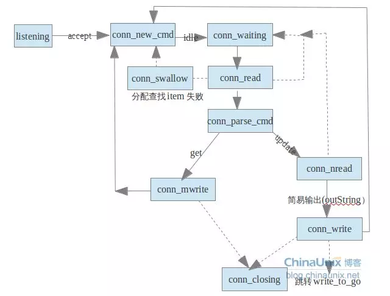

Memcached源码阅读十七 状态机
按我们之前的描述，Master线程建立连接之后，分发给Worker线程，而Worker线程处理业务逻辑时，会进入状态机，状态机按不同的状态处理业务逻辑，我们在分析连接分发时，已经看到了Master线程进入状态机时在有新连接建立的时候，后续的状态都是业务逻辑的状态，其处理流程如下图所示：

共有10个状态（代码中的状态不止这些，有些没什么用，此处就没展现），状态listenning状态是Master建立连接的过程，我们已经分析过了，我们接下来分不同的文章分析其余的9中状态。
enum conn_states {
conn_listening, //监听状态
conn_new_cmd, //为新连接做一些准备
conn_waiting, //等待读取一个数据包
conn_read, //读取网络数据
conn_parse_cmd, //解析缓冲区的数据
conn_write, //简单的回复数据
conn_nread, //读取固定数据的网络数据
conn_swallow, //处理不需要的写缓冲区的数据
conn_closing, //关闭连接
conn_mwrite, //顺序的写多个item数据
conn_max_state //最大状态，做断言使用
};
这篇文件先分析conn_new_cmd和conn_wating状态，子线程最初进入的状态就是conn_new_cmd状态，这个状态主要是做一些清理。
case conn_new_cmd:
//全局变量，记录每个libevent实例处理的事件，通过初始启动参数配置
--nreqs;
//还可以处理请求
if (nreqs >= 0)
{
//整理缓冲区
reset_cmd_handler(c);
}
//拒绝请求
else
{
pthread_mutex_lock(&c->thread->stats.mutex);
c->thread->stats.conn_yields++;//更新统计数据
pthread_mutex_unlock(&c->thread->stats.mutex);
//如果缓冲区有数据，则需要处理
if (c->rbytes > 0)
{
//更新libevent状态
if (!update_event(c, EV_WRITE | EV_PERSIST))
{
if (settings.verbose > 0)
fprintf(stderr, "Couldn't update event\n");
conn_set_state(c, conn_closing);//关闭连接
}
}
stop = true;
}
break;
//整理缓冲区
static void reset_cmd_handler(conn *c)
{
c->cmd = -1;
c->substate = bin_no_state;
//还有item
if (c->item != NULL)
{
//删除item，本篇不分析其实现，后续分析
item_remove(c->item);
c->item = NULL;
}
//整理缓冲区
conn_shrink(c);
//缓冲区还有数据
if (c->rbytes > 0)
{
//更新状态
conn_set_state(c, conn_parse_cmd);
}
//如果没有数据
else
{
//进入等待状态，状态机没有数据要处理，就进入这个状态
conn_set_state(c, conn_waiting);
}
}
//缩小缓冲区
static void conn_shrink(conn *c)
{
assert(c != NULL);
//如果是UDP协议，不牵涉缓冲区管理
if (IS_UDP(c->transport))
return;
//读缓冲区空间大小>READ_BUFFER_HIGHWAT && 已经读到的数据还没解析的数据小于 DATA_BUFFER_SIZE
if (c->rsize > READ_BUFFER_HIGHWAT && c->rbytes < DATA_BUFFER_SIZE)
{
char *newbuf;
if (c->rcurr != c->rbuf)
//目前数据是从rcurr开始的，移动数据到rbuf中
memmove(c->rbuf, c->rcurr, (size_t) c->rbytes);
//按DATA_BUFFER_SIZE扩大缓冲区
newbuf = (char *) realloc((void *) c->rbuf, DATA_BUFFER_SIZE);
if (newbuf)
{
//更新读缓冲区
c->rbuf = newbuf;
//更新读缓冲区大小
c->rsize = DATA_BUFFER_SIZE;
}
c->rcurr = c->rbuf;
}
//需要写出的item的个数，也就是要发送给客户端的item的个数
if (c->isize > ITEM_LIST_HIGHWAT)
{
//增大存放item的空间
item **newbuf = (item**) realloc((void *) c->ilist,ITEM_LIST_INITIAL * sizeof(c->ilist[0]));
if (newbuf)
{
//更新信息
c->ilist = newbuf;
//更新信息
c->isize = ITEM_LIST_INITIAL;
}
}
//msghdr的个数，memcached发送消息是通过sendmsg批量发送的
if (c->msgsize > MSG_LIST_HIGHWAT)
{
struct msghdr *newbuf = (struct msghdr *) realloc((void *) c->msglist,MSG_LIST_INITIAL * sizeof(c->msglist[0]));//增大空间
if (newbuf)
{
//更新信息
c->msglist = newbuf;
//更新信息
c->msgsize = MSG_LIST_INITIAL;
}
}
//msghdr里面iov的数量
if (c->iovsize > IOV_LIST_HIGHWAT)
{
//增大空间
struct iovec *newbuf = (struct iovec *) realloc((void *) c->iov,IOV_LIST_INITIAL * sizeof(c->iov[0]));
if (newbuf)
{
//更新信息
c->iov = newbuf;
//更新信息
c->iovsize = IOV_LIST_INITIAL;
}
}
}
从conn_new_cmd状态会进入conn_parse_cmd状态（如果有数据）或者conn_waiting（如果没有数据）状态，下面看看conn_waiting状态。
case conn_waiting:
//修改libevent状态，读取数据
if (!update_event(c, EV_READ | EV_PERSIST))
{
if (settings.verbose > 0)
fprintf(stderr, "Couldn't update event\n");
conn_set_state(c, conn_closing);
break;
}
//进入读数据状态
conn_set_state(c, conn_read);
stop = true;
break;
//更新libevent状态，也就是删除libevent事件后，重新注册libevent事件
static bool update_event(conn *c, const int new_flags)
{
assert(c != NULL);
struct event_base *base = c->event.ev_base;
if (c->ev_flags == new_flags)
return true;
//删除旧的事件
if (event_del(&c->event) == -1)
return false;
//注册新事件
event_set(&c->event, c->sfd, new_flags, event_handler, (void *) c);
event_base_set(base, &c->event);
c->ev_flags = new_flags;
if (event_add(&c->event, 0) == -1)
return false;
return true;
}
conn_wating状态是在等待读取数据，conn_wating通过修改libevent事件（修改为读事件）之后就进入了conn_read状态，该状态就是从网络中读取数据，下面我们详细分析conn_read状态。
case conn_read:
res = IS_UDP(c->transport) ? try_read_udp(c) : try_read_network(c);//判断采用UDP协议还是TCP协议
switch (res)
{
case READ_NO_DATA_RECEIVED://未读取到数据
conn_set_state(c, conn_waiting);//继续等待
break;
case READ_DATA_RECEIVED://读取数据
conn_set_state(c, conn_parse_cmd);//开始解析数据
break;
case READ_ERROR://读取发生错误
conn_set_state(c, conn_closing);//关闭连接
break;
case READ_MEMORY_ERROR: //申请内存空间错误，继续尝试
break;
}
break;
//采用TCP协议，从网络读取数据
static enum try_read_result try_read_network(conn *c)
{
enum try_read_result gotdata = READ_NO_DATA_RECEIVED;
int res;
int num_allocs = 0;
assert(c != NULL);
//rcurr标记读缓冲区的开始位置，如果不在，通过memmove调整
if (c->rcurr != c->rbuf)
{
if (c->rbytes != 0)
memmove(c->rbuf, c->rcurr, c->rbytes);
//rcurr指向读缓冲区起始位置
c->rcurr = c->rbuf;
}
//循环读取
while (1)
{
//已经读取到的数据大于读缓冲区的大小
if (c->rbytes >= c->rsize)
{
if (num_allocs == 4)
{
return gotdata;
}
++num_allocs;
//按2倍扩容空间
char *new_rbuf = realloc(c->rbuf, c->rsize * 2);
//realloc发生错误，也就是申请内存失败
if (!new_rbuf)
{
if (settings.verbose > 0)
fprintf(stderr, "Couldn't realloc input buffer\n");
//忽略已经读取到的数据
c->rbytes = 0;
out_string(c, "SERVER_ERROR out of memory reading request");
//下一个状态就是conn_closing状态
c->write_and_go = conn_closing;
return READ_MEMORY_ERROR;
}
//读缓冲区指向新的缓冲区
c->rcurr = c->rbuf = new_rbuf;
//读缓冲区的大小扩大2倍
c->rsize *= 2;
}
//读缓冲区剩余空间
int avail = c->rsize - c->rbytes;
//执行网络读取，这个是非阻塞的读
res = read(c->sfd, c->rbuf + c->rbytes, avail);
//如果读取到了数据
if (res > 0)
{
pthread_mutex_lock(&c->thread->stats.mutex);
//更新线程的统计数据
c->thread->stats.bytes_read += res;
pthread_mutex_unlock(&c->thread->stats.mutex);
//返回读取到数据的状态
gotdata = READ_DATA_RECEIVED;
//读取到的数据个数增加res
c->rbytes += res;
//最多读取到avail个，如果已经读到了，则可以尝试继续读取
if (res == avail)
{
continue;
}
//否则，小于avail,表示已经没数据了，退出循环。
else
{
break;
}
}
//表示已经断开网络连接了
if (res == 0)
{
return READ_ERROR;
}
//因为是非阻塞的，所以会返回下面的两个错误码
if (res == -1)
{
if (errno == EAGAIN || errno == EWOULDBLOCK)
{
break;
}
return READ_ERROR;
}
}
return gotdata;
}
上面描述的是TCP的数据读取，下面我们分析下UDP的数据读取，UDP是数据报的形式，读取到一个，就是一个完整的数据报，所以其处理过程简单。
//UDP读取网络数据
static enum try_read_result try_read_udp(conn *c)
{
int res;
assert(c != NULL);
c->request_addr_size = sizeof(c->request_addr);
//执行UDP的网络读取
res = recvfrom(c->sfd, c->rbuf, c->rsize, 0, &c->request_addr,
&c->request_addr_size);
//UDP数据包大小大于8，已经有可能是业务数据包
if (res > 8)
{
unsigned char *buf = (unsigned char *)c->rbuf;
pthread_mutex_lock(&c->thread->stats.mutex);
//更新每个线程的统计数据
c->thread->stats.bytes_read += res;
pthread_mutex_unlock(&c->thread->stats.mutex);
/* Beginning of UDP packet is the request ID; save it. */
c->request_id = buf[0] * 256 + buf[1];
//一些业务的特征信息判断
if (buf[4] != 0 || buf[5] != 1)
{
out_string(c, "SERVER_ERROR multi-packet request not supported");
return READ_NO_DATA_RECEIVED;
}
/* Don't care about any of the rest of the header. */
res -= 8;
//调整缓冲区
memmove(c->rbuf, c->rbuf + 8, res);
c->rbytes = res;//更新信息
c->rcurr = c->rbuf;
return READ_DATA_RECEIVED;
}
return READ_NO_DATA_RECEIVED;
}
从网络读取了数据之后，将会进入conn_parse_cmd状态，该状态是按协议来解析读取到的网络数据。
case conn_parse_cmd:
//解析数据
if (try_read_command(c) == 0)
{
//如果读取到的数据不够，我们继续等待，等读取到的数据够了，再进行解
conn_set_state(c, conn_waiting);
}
break;
//memcached支持二进制协议和文本协议
static int try_read_command(conn *c)
{
assert(c != NULL);
assert(c->rcurr <= (c->rbuf + c->rsize));
assert(c->rbytes > 0);
if (c->protocol == negotiating_prot || c->transport == udp_transport)
{
//二进制协议有标志，按标志进行区分
if ((unsigned char)c->rbuf[0] == (unsigned char)PROTOCOL_BINARY_REQ)
{
c->protocol = binary_prot;//二进制协议
}
else
{
c->protocol = ascii_prot;//文本协议
}
if (settings.verbose > 1)
{
fprintf(stderr, "%d: Client using the %s protocol\n", c->sfd,
prot_text(c->protocol));
}
}
//如果是二进制协议
if (c->protocol == binary_prot)
{
//二进制协议读取到的数据小于二进制协议的头部长度
if (c->rbytes < sizeof(c->binary_header))
{
//返回继续读数据
return 0;
}
else
{
#ifdef NEED_ALIGN
//如果需要对齐，则按8字节对齐，对齐能提高CPU读取的效率
if (((long)(c->rcurr)) % 8 != 0)
{
//调整缓冲区
memmove(c->rbuf, c->rcurr, c->rbytes);
c->rcurr = c->rbuf;
if (settings.verbose > 1)
{
fprintf(stderr, "%d: Realign input buffer\n", c->sfd);
}
}
#endif
protocol_binary_request_header* req;//二进制协议头
req = (protocol_binary_request_header*)c->rcurr;
//调试信息
if (settings.verbose > 1)
{
/* Dump the packet before we convert it to host order */
int ii;
fprintf(stderr, "<%d Read binary protocol data:", c->sfd);
for (ii = 0; ii < sizeof(req->bytes); ++ii)
{
if (ii % 4 == 0)
{
fprintf(stderr, "\n<%d ", c->sfd);
}
fprintf(stderr, " 0x%02x", req->bytes[ii]);
}
fprintf(stderr, "\n");
}
c->binary_header = *req;
c->binary_header.request.keylen = ntohs(req->request.keylen);
c->binary_header.request.bodylen = ntohl(req->request.bodylen);
c->binary_header.request.cas = ntohll(req->request.cas);
//判断魔数是否合法，魔数用来防止TCP粘包
if (c->binary_header.request.magic != PROTOCOL_BINARY_REQ)
{
if (settings.verbose)
{
fprintf(stderr, "Invalid magic: %x\n",
c->binary_header.request.magic);
}
conn_set_state(c, conn_closing);
return -1;
}
c->msgcurr = 0;
c->msgused = 0;
c->iovused = 0;
if (add_msghdr(c) != 0)
{
out_string(c, "SERVER_ERROR out of memory");
return 0;
}
c->cmd = c->binary_header.request.opcode;
c->keylen = c->binary_header.request.keylen;
c->opaque = c->binary_header.request.opaque;
//清除客户端传递的cas值
c->cas = 0;
dispatch_bin_command(c);//协议数据处理
//更新已经读取到的字节数据
c->rbytes -= sizeof(c->binary_header);
//更新缓冲区的路标信息
c->rcurr += sizeof(c->binary_header);
}
}
}
文本协议的过程和二进制协议的过程类似，此处不分析，另外dispatch_bin_command是处理具体的（比如get,set等）操作的，和是二进制协议具体相关的，解析完一些数据之后，会进入到conn_nread的流程，也就是读取指定数目数据的过程，这个过程主要是做具体的操作了，比如get，add，set操作。
case bin_read_set_value:
complete_update_bin(c);//执行Update操作
break;
case bin_reading_get_key:
process_bin_get(c);//执行get操作
break;
状态机的整个处理过程就介绍到这里，其他的状态我们就不介绍了，了解了这些之后，其实其他状态就相对容易很多。